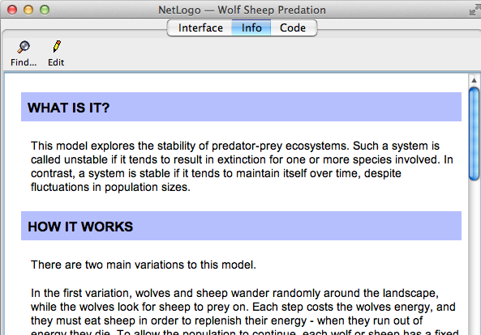
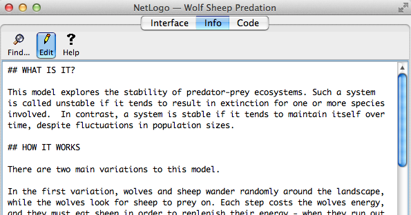

信息选项卡提供一个模型的介绍。告诉我们这个模型用的是什么系统，怎么建立起来的，模型要怎么使用。也会告诉我们要怎么去扩展这个模型，或者引起你对NetLogo中一些特色的注意。

你应该在开始模型前先阅读信息卡。
通常情况下的信息选项卡是不可写的，要变成可写的话需要点击"Edit"键。当编辑结束的时候，再次点击"Edit"键。

你编辑信息选项卡为无格式的纯文本。当你编辑完了,纯文本输入以一个更有吸引力的格式显示。
为了控制控制如何格式化的显示器看上去,你使用"标记语言"称为Makedown。你可能已经在别处遇到Makedown;它是用在许多web站点。(还有其他标记语言在web上使用;例如,维基百科使用标记语言称为MediaWiki。标记语言不同在于细节)。
本指南的其余部分是一堆 Markdown.
标题开始于以下标志 (#)。第一层标题有一个#，第二层有两个，这样下去一直到第四层。
# First-level heading
## Second-level heading
### Third-level heading
#### Fourth-level heading
This is a paragraph. There are no spaces before the word 'This'.
This is another paragraph. The first line has two sentences.
The entire paragraph has two lines and three sentences.
Line breaks in the input,
Make line breaks in the output,
Like this.
这个是一个段落，在‘this’之间并没有空格。
这是另一个段落，第一行有两句话，整段话有三句两行。
Line breaks in the input,
Make line breaks in the output,
Like this.
For italics, surround text with underscores:
_hello, world_.
For bold, surround text with two asterisks:
**hello, world**.
You can also combine them:
_**hello**_ and **_goodbye_**
斜体字，环绕文字用于下划线：
hello, world.
粗体字，环绕文字用两个*：
hello, world.
你也可以结合他们：
hello and goodbye
We are about to start an ordered list.
1. Ordered lists are indented 2 spaces.
1. Subitems are indented 2 more spaces (4 in all).
2. The next item in the list starts with the next number.
3. And so on...
我们将开始排序。
We are about to start an unordered list.
* Like ordered lists, unordered lists are also indented 2 spaces.
* Unlike ordered lists, unordered lists use stars instead of numbers.
* Sub items are indented 2 more spaces.
* Here's another sub item.
接下来展示无序序列
最简单的方式创建连接就是直接输入
http://ccl.northwestern.edu/netlogo
http://ccl.northwestern.edu/netlogo
如果你想连接到你自己的文本，需要这样做：
[link text here](link.address.here)
[NetLogo](http://ccl.northwestern.edu/netlogo)
连接到你电脑的一页而不是Internet上的一页也是有可能的，
本地连接是这种格式的：
[alt text](file:path)
任何空格都需要用%20代替。例如：
file:my page.html
要写成：
file:my%20page.html
这个路径是和模型文件存在的相对目录连接的。
最方便的方法连接到你的电脑就是把他们放在和你模型相同的目录下。假设你有一个名为index.html的文件和你的模型在相同的目录下，连接就是下面的样子的：
[Home](file:index.html)
如果文件在docs文件夹下，docs和模型在相同的目录下：
[Home](file:docs/index.html)
图片和连接非常的相似，但是在之前会有一个感叹号：

（当图片没有找到的时候会选择代替文本）

也和连接是非相似，他可以展示你电脑中的图片，假设你有一个图片名为 image.jpg，本地图片就是这样的：

这个路径是和模型文件存在的相对目录连接的。
和本地连接一样，任何空格都需要用%20代替。
和本第连接一样，最简单的方式就是把要展示的图片放在模型相同的目录下面。下面的例子展示图片"Perspective Example.png"，是和模型有相同的目录的。


连续的行之前可以用>,也可以把任何文本放进去。
> Let me see: four times five is twelve, and four times six is thirteen,
> and four times seven is --- _oh dear!_
> I shall never get to twenty at that rate!
Let me see: four times five is twelve, and four times six is thirteen,
and four times seven is -- oh dear!
I shall never get to twenty at that rate!
在一个句子包括一小段代码,用引号包围(`).
You can create a single turtle with the `crt 1` command.
You can create a single turtle with the crt 1 command.
代码模块化，创建模块，有以下四步：
About to start the code block.
Leave a blank line after this one, and then indent four spaces:
; a typical go procedure
to go
ask turtles
[ fd 1 ]
tick
end
About to start the code block.
Leave a blank line after this one, and then indent four spaces:
; a typical go procedure
to go
ask turtles
[ fd 1 ]
tick
end
上标和下标写作是有用的公式,方程,脚注和更多。下标出现半字符低于基线,和写使用HTML标记< sub >。上标出现半字符高于基线,和写使用HTML标记。
H<sub>2</sub>O
2x<sup>4</sup> + x<sup>2</sup>
WWW<sup>[1]</sup>
H2O
2x4 + x2 + 42
WWW[1]
段落、列表、代码块和其他特性应该分开使用一个空行。如果你发现有什么东西不格式化你的预期,这可能是因为你需要添加一个空行之前。
防止特殊字符被当作标记,把一个反斜杠
(\)放在前面。
我们使用GitHub换行(http://github.github.com/github-flavored-markdown/) 而不是传统的Markdown处理换行。 这意味着换行被视为真正的换行符,而不是被结合成一个单一的段落前一行。
Markdown 有其他我们没展示出来的特色。
我们在很多的系统中检测了这些特色。如果你使用其他的 Markdown属性, 你会发现他可能能在你的电脑中运行。甚至如果是用不同的系统的话可能在电脑中有不一样的情况出现甚至一点都没有用。
如果你想要所有的用户都阅读你的信息选项卡，就使用下面的属性。
了解更多 Markdown 信息点击 http://daringfireball.net/projects/markdown/。想要阅读 Markdown, NetLogo 有 Pegdown字典。